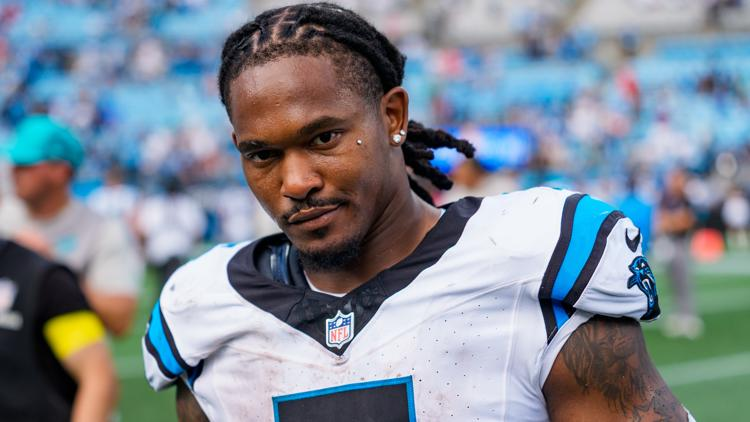
Who had week five points leader being Rico Dowdle on their bingo card? I did not. Unfortunately, it didn’t help PJ pick up the win in the MOTW, against 4-1 Kris.Our bottom two guys, Tony and CJ, have the most FAAB left… maybe spend some?
Across the league, we had a real barn burner with Joel outlasting Andy and Mahomes on Monday night, pulling out the victory by 1.5.
Snake and Kris “Big Dumper” Turner both pull off their 4th straight wins, however…
Matchup of the Week Spitters Not Quitters (4-1) vs. London Tee Party (4-1) Someone’s leaving week six with sole possession of first place.
These two guys hate each other with the deepest passion, so that adds to this rivalry (jk). But most surprisingly, they haven’t traded with each other yet this season, perhaps a nod to their rosters performing at #1 and #2 in Points For.
What to watch: * TNF got us started, with a zero from the Eagles D, but Hurts couldn’t take advantage of a fast start and really only survived via four-straight tush pushes resulting in a TD. * Kris has Dak, but Jake has Javonte and Ferguson, should be exciting to see who gets the ball in this showdown versus Carolina. * Kris has two WR2’s working overtime as their team’s new WR1’s in Pickens and Waddle, that could provide a major boost, as they both have excelled in their new roles. * Honestly, I got no idea to start at my flex, not the sexiest story but have Flowers (no Lamar), Henry (no Lamar), and Higgins (yes, Flacco)
Waiver Wire Spice 🌶️ * People are starting to run outta money… * Pangy spicing the spice with Michael Carter at $17 - had 23 touches last week, but also faced the Titans, not the Colts, then Green Bay, a bye, and perhaps Benson will be back after the bye. * Neil continues his spending spree picking up Haskins, gambling on who could be the Chargers guy (behind their crumbling o-line.) * Tony picked up Matthew Golden this Saturday for $1 - I remain highly optimistic about what he can be, but couldn’t justify holding onto him. I’m also pretty convinced that his longest catch of the year was intended for Doubs, but he was just in the area and snagged it. (I almost picked him back up on Weds, still) * I write these things, so let’s keep it about me… Nobody else bid on Jameson Williams after his drop, and I spent $8, but believe he’ll get more involved again soon, and he can do a lot with a few extra targets.
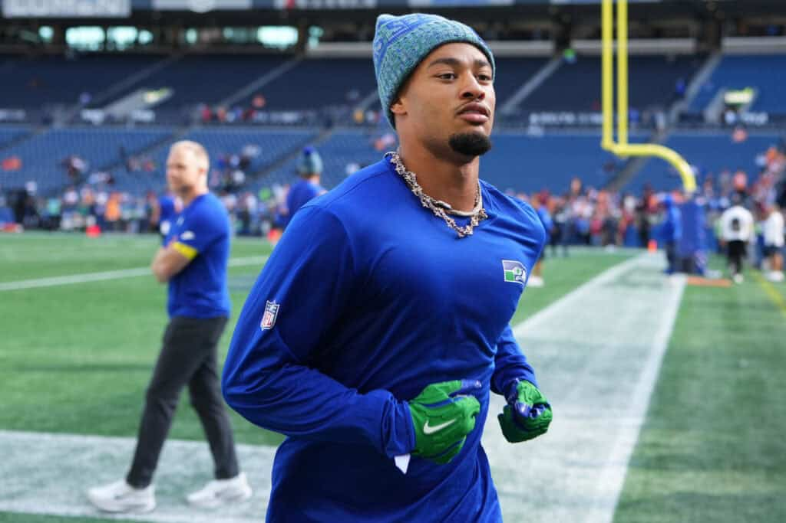
1. Kris (4-1)
PF: 676.36, FAAB: $60, W4 ↔️
What is happening? This is clearly an alternative timeline. Or, maybe Kris has been in the lab since last Christmas, pushing AI to the limits to provide him with the needed insights to vault him to his first championship.
Reason for Optimism: He hasn’t screwed this up, yet. Haha, but for real, Kris splurged on JSN and it has absolutely paid off in spades. It feels great when your guy is also on your team, and excelling. JT and Dak have been pretty good, too.
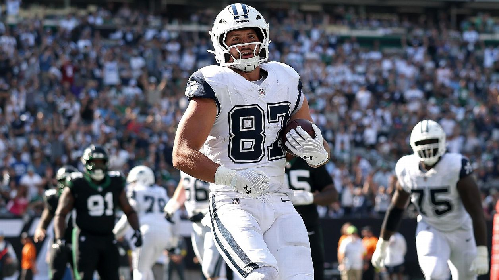
2. Jake (4-1)
PF: 644.26, FAAB: $69 (nice), W4 ⬆️⬆️
Got my big boom week, but how long can the Cowboys keep Javonte and Ferg going? It looks real, their defense is terrible, thus pushing up the scores, but it scares me.
Reason for Optimism: Tee Higgins has a Flacco, who is gonna need to throw it a million times a game. Also, Lamar will be back soon, and hopefully that’ll mean less 8-man boxes against Prince Henry.
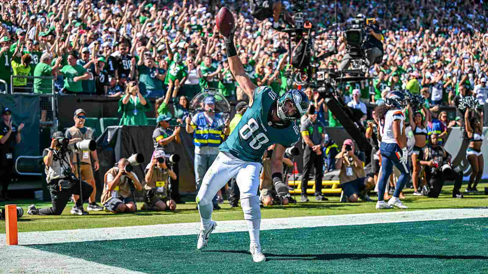
3. Joel (3-2)
PF: 624.32, FAAB: $33, W1 ⬆️⬆️
Apart from St. Brown, just a bunch of solid guys all around-it doesn’t always make the news, but getting 15 out of guys each week will keep you afloat. This week, it was enough to fend off Andy, keeping Joel in the playoff mix. This week is off to a great start with a big game from Goedert (he’s so boring I couldn’t even get a picture from this game on TNF though, lol.)
Reason for Optimism: Brian Thomas seemed to get it going a bit last week, and Waller the Baller may have a substantial role in the Miami red zone offense - but could cause a touchdown regression for Achane?
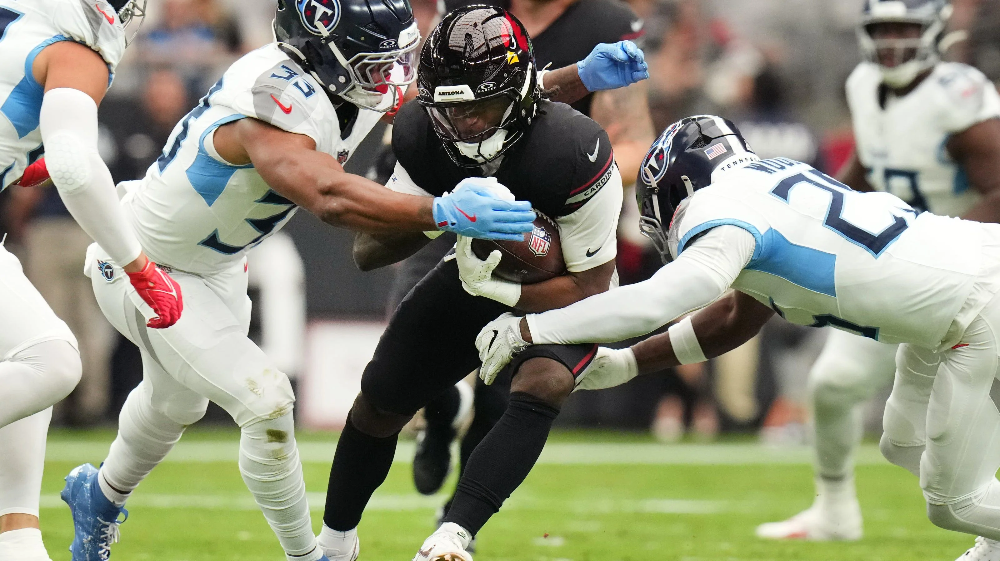
4. Pangy (3-2)
PF: 633.18, FAAB: $19, L1 ⬇️
Saquon’s been a let down, and half of his team’s in the hospital, but somehow he’s hanging tight at third in the rankings and PF. I mean, that’s gotta be a…
Reason for Optimism: His guys have been banged up, but they ain’t dead either. Bucky, Pearsall, and F1 all seem to be coming back sooner than later, and could give him a big boost.
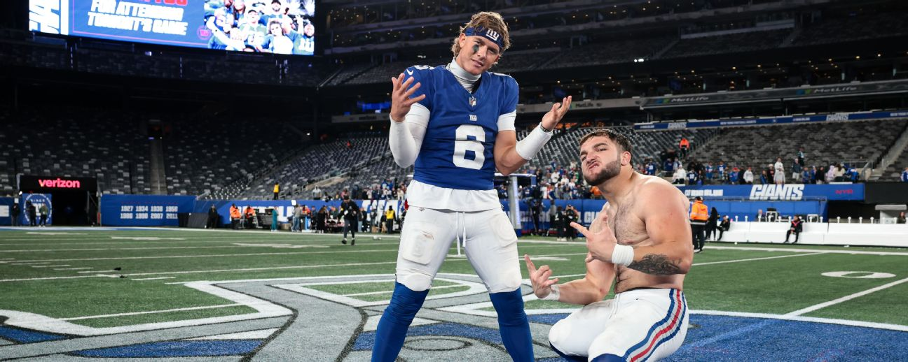
5. Andy (3-2)
PF: 597.80, FAAB: $6, L1 ⬇️⬇️⬇️
Mahomes gives away the Chiefs game, and in turn, shoots Andy in the foot nonetheless. But still a pretty strong showing, keeping him afloat. I initially had Andy below Seif, but…
Reason for Optimism: Holy moly, Skattebo is taking the league by storm. He’s this year’s Devito, Menshew, etc. And he responded quite well to being put on the block this week. Get your trades into Dave!
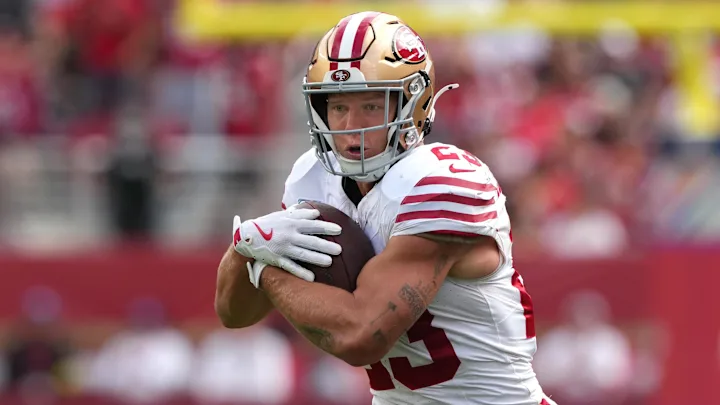
6. Seif (2-3)
PF: 621.62, FAAB: $33, W1 ↔️
Seif has faced stiff competition this year, with the second most PA, but CMC has been his godsend and has kept him in the mix. That will 100% be the same story all year long, there’s no way anyone could curse that.
Reason for Optimism: When you draft Lamar and Bowers, you expect them to lead their positions, and they’ll come back at some point. Then Seif could be looking at QB1, RB1 and TE1, with Deebo not far off on the WR front.
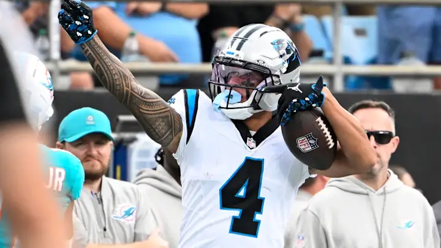
7. Neil (2-3)
PF: 543.72, FAAB: $5, W2 ↔️
He ain’t taking this shit lightly. Neil is spending and… WINNING. One of three teams on an actual win streak, should we be treating this seriously? He’s faced some struggling teams, and that continues this week against PJ. Could be a nice litmus test.
Reason for Optimism: Tetairoa has 8 targets in every game. That has the makings of a back-half breakout. Maybe Bryce will lose his job and Dalton can actually complete those passes.
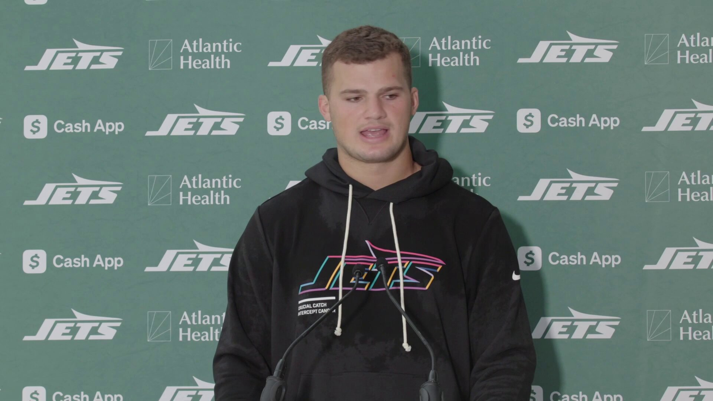
8. PJ (2-3)
PF: 576.56, FAAB: $29, L3 ↔️
Loser of three straight, even with the Dowdle bomb. This week PJ turns to Dowdle (again), Butterfingers Stevenson and Mason Taylor(?… ah, looked him up, he’s the Jets TE, and Broncos have been soft against TE, so maybe that’s the wise pick this week in London. (pictured above))
Reason for Optimism: Holding onto the suspended Rice is about to start paying off. Could be timed nicely with Lamb’s return, though his timeline has been a fishy one since the injury. And next week, he’s matched up against Tony’s spiraling squad.
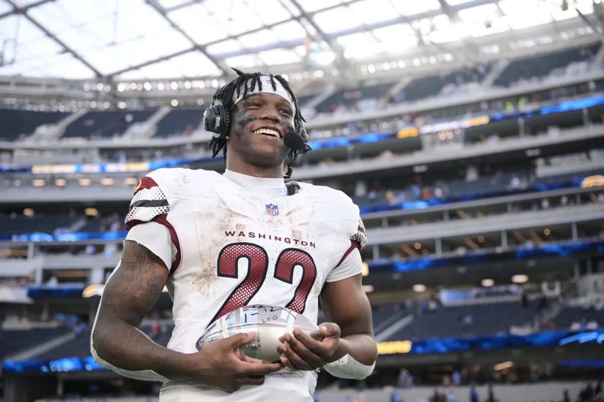
9. Tony (1-4)
PF: 542.60, FAAB: $83, L4 ⬆️
Ja’marr responded nicely to be called unstartable. Is Flacco the cure for all of Tony’s ails? If you look at his team top-to-bottom last week, you’d be surprised, almost every guy looked great. Will they continue to disappoint Tony, just like the Nittany Lions and Ravens?
Reason for Optimism: Croskey-Merritt, sorry excuse me, Bill, finally seems primed to be the guy Tony drafted him to be. Daniels is back, opening up space and opportunity for Bill to shine.
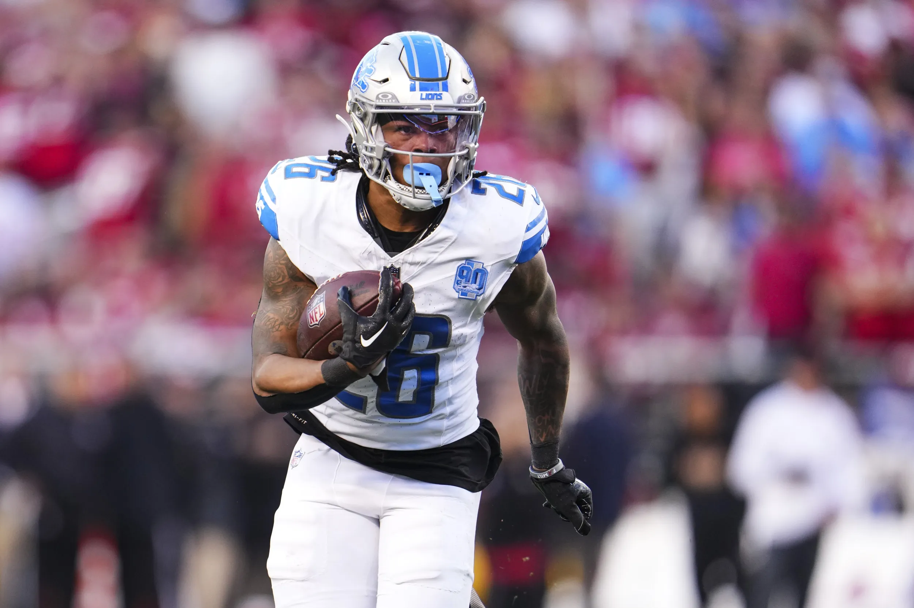
10. Chris (1-4)
PF: 525.96, FAAB: $80, L2 ⬇️
This team is littered with underperformers: Warren, Brown, Olave, Kelce, Moor, Pacheco, Worthy, Hockenson, Evans… man my fingers are getting tired typing this. Last in PF.
Reason for Optimism: Let’s see here, uhmm, Gibbs probably has a 40-pointer in him on the horizon, that could win him a game.
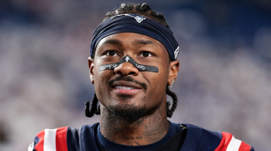
“Happy Sunday.” (one of us!!!)
- Stefon Diggs
Last Thing - found out about this site that helps get kids into football, for all you football dads out there: https://www.futurefans.com/
Good luck to everyone besides Kris! - Jake 💋